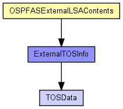

(no description)
The following diagram shows usage relationships between types. Unresolved types are missing from the diagram. Click here to see the full picture.
The following diagram shows inheritance relationships for this type. Unresolved types are missing from the diagram. Click here to see the full picture.

| Name | Type | Description |
|---|---|---|
| forwardingAddress | IPAddress | |
| tosData | TOSData | |
| E_ExternalMetricType | bool | |
| externalRouteTag | long |
struct ExternalTOSInfo { TOSData tosData; bool E_ExternalMetricType; IPAddress forwardingAddress; long externalRouteTag; }